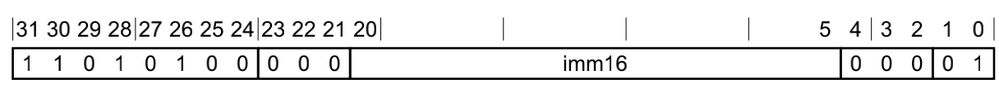

SVC举例
ARM64中svc 0x80的opcode=二进制
ARM64=AArch64中，SVC指令
- 指令格式=指令编码

- 指令语法
SVC #<imm>- imm=立即数
- 16位的无符号数
- 范围：0~65535
- 内部对应bit位数：bit 20~5
- imm=立即数
-》所以此处的ARM汇编代码：
SVC 0x80
->
- imm= 0x80
- 放到bit 20-5
加上其他固定bit位数，就是：
- bit 31-21：
1101 0100 000 - bit 20-5：
0000 0000 1000 0000 - bit 4-0：
000 01
-》合并起来就是：
1101 0100 000 0000 0000 1000 0000 000 01
1101 0100 0000 0000 0001 0000 0000 0001
D4 00 10 01
- Little Endian
01 10 00 D4011000D4
- Big Endian
D4 00 10 01D4001001
-》即：
如此，才算真正搞懂：
（一般常见的默认的Little Endian的）ARM64=64位的ARM的svc 0x80的opcode=二进制，值是：011000D4
svc 0 -> Perform a syscall (syscall number x16 register)
下面以svc 0为例，说明svc指令典型的用法和流程：
- mov x0, x1 -> x0 = x1
- movn x0, 1 -> x0 = -1
- add x0, x1 -> x0 = x0 + x1
- ldr x0, [x1] -> x0 = *x1 -> x0 = address stored in x1
- ldr x0, [x1, 0x10]! -> x1 += 0x10; x0 = *x1(Pre-Indexing mode)
- ldr x0, [x1], 0x10 -> x0 = *x1; x1 += 0x10 (Post-Indexing mode)
- str x0, [x1] -> *x1 = x0 -> Destination is on the right
- ldr x0, [x1, 0x10] -> x0 = *(x1 + 0x10)
- ldrb w0, [x1] -> Load a byte from address stored in x1
- ldrsb w0, [x1] -> Load a signed byte from address stored in x1
- adr x0, label -> Load address of labels into x0
- stp x0, x1, [x2] -> x2 = x0; (x2 + 8) = x1
- stp x29, x30, [sp, -64]! -> store x29, x30 (LR) on stack
- ldp x29, x30, [sp], 64] -> Restore x29, x30 (LR) from the stack
- svc 0 -> Perform a syscall (syscall number x16 register)
- str x0, [x29] -> store x0 at the address in x29 (destination on right)
- ldr x0, [x29] -> load the value from the address in x29 into x0
- blr x0 -> calls the subroutine at the address stored in x0, store next instruction in link register (x30)
- br x0 -> Jump to address stored in x0
- bl label -> Branch to label, store next instruction in link register (x30)
- bl printf -> Call the printf function with arguments stored x0, x1
- ret -> Jump to the address stored in x30